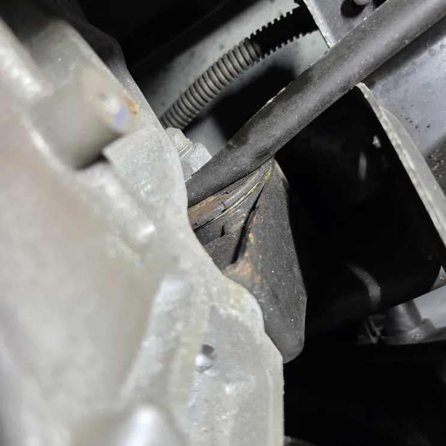
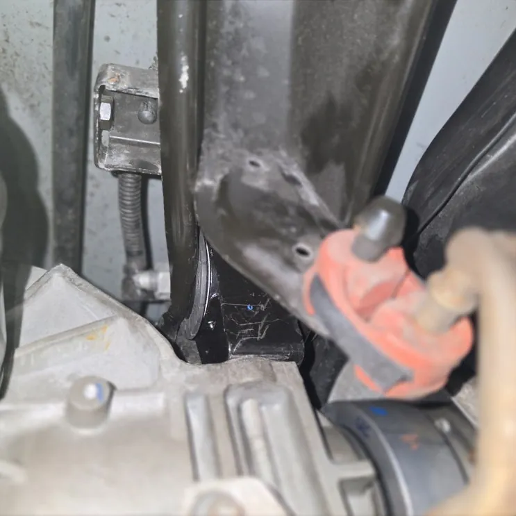
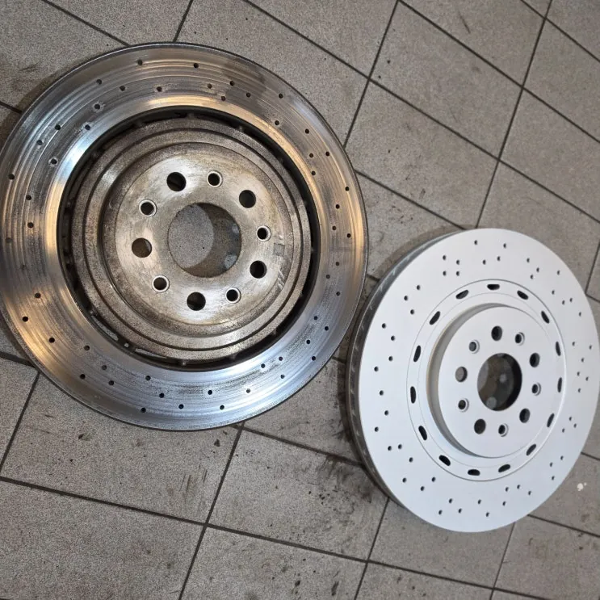
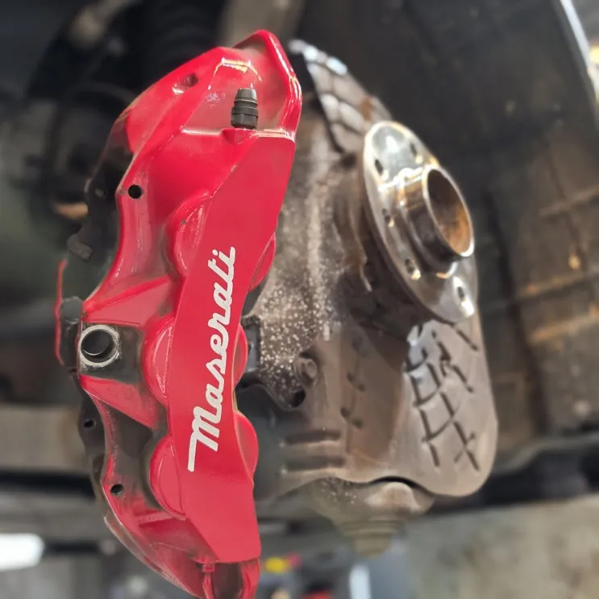
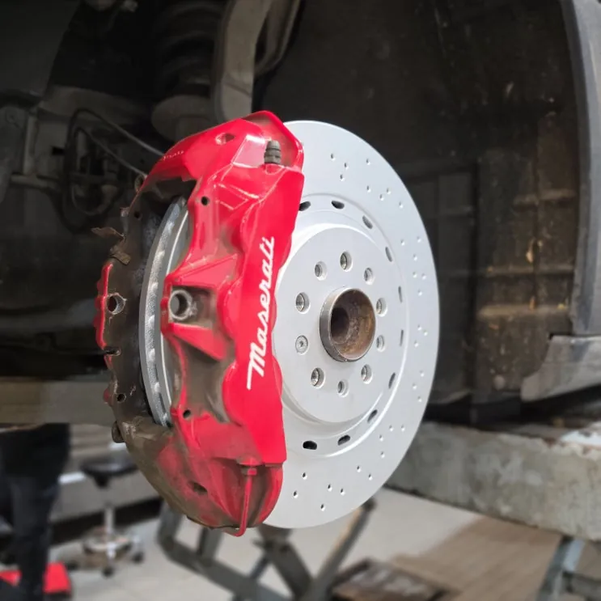
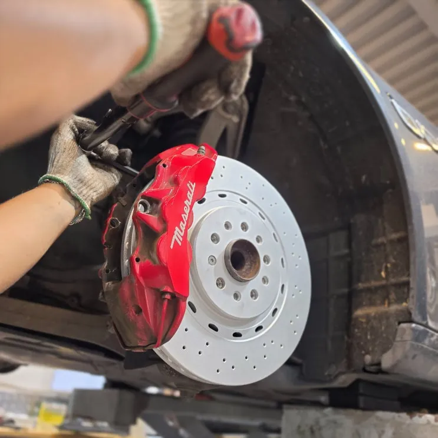
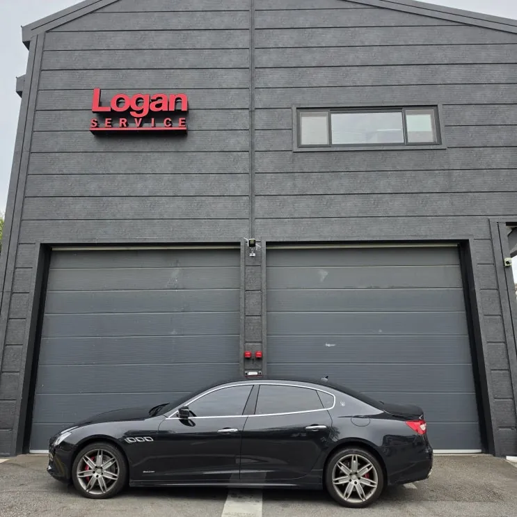

콰트로포르테 주행 중 하부 소음 — 디퍼런셜 마운트·앞 브레이크 디스크·패드 교환
At a glance한눈에 보기
- 차량
- 마세라티 콰트로포르테
- 증상
- 주행 중 하부 소음
- 진단
- 콰트로포르테 주행 중 하부 소음의 원인은 고무 부싱이 갈라지고 찢어진 디퍼런셜 마운트였습니다. 마운트를 교환하고, 기본 점검에서 마모가 많이 진행된 것으로 확인된 앞 브레이크 디스크와 패드도 좌우 함께 교환했습니다.
- 작업
- 하부 점검
- 디퍼런셜 마운트 교환
- 앞 브레이크 디스크·패드 교환
- 시운전

입고 증상
주행 중 차 아래에서 소음이 느껴진다는 콰트로포르테였습니다. 하부 소음은 원인이 여러 가지일 수 있어, 리프트에 올려 하부 전체를 점검하는 것부터 시작했습니다.


진단 — 찢어진 디퍼런셜 마운트
디퍼런셜 마운트의 고무 부싱이 갈라지고 찢어져 있는 것을 확인했습니다. 디퍼런셜은 구동력을 전달하면서 조금씩 움직이는데, 마운트 부싱이 찢어지면 이를 제대로 붙잡지 못해 움직임이 커집니다. 그 충격이 마운트와 주변 부품으로 전해지면서 소음이 생길 수 있습니다.
입고 때 함께 한 기본 점검에서는 앞 브레이크 디스크와 패드의 마모가 꽤 진행된 것도 확인됐습니다. 그대로 타면 제동할 때 진동이나 소음이 생길 수 있는 상태라 차주에게 함께 안내했습니다.


작업 내용
손상된 디퍼런셜 마운트를 새 부품으로 바꾸고, 볼트 체결 상태와 주변 브라켓·연결부까지 함께 확인했습니다. 마운트는 눈에 잘 띄지 않는 부위지만 하부 전체의 진동과 소음에 영향을 주기 때문에 주변부 점검을 같이 했습니다.
앞 브레이크는 캘리퍼를 떼어 낸 뒤 좌우 디스크를 새것으로 바꾸고 새 패드를 장착했습니다. 패드가 바르게 앉았는지와 캘리퍼 작동 상태를 확인하며 조립했고, 각 부품의 체결 토크와 위치도 다시 봤습니다.


출고 점검
휠을 규정 토크로 장착한 뒤 시운전으로 하부 진동이 사라졌는지와 제동 느낌이 정상으로 돌아왔는지 확인하고 출고했습니다.
디퍼런셜 마운트 손상은 방치하면 시간이 지나며 다른 구동계 부품에도 영향을 줄 수 있어 정기적인 하부 점검이 도움이 됩니다. 로건서비스는 경기도 파주에 있으며 전국 탁송 입고도 가능합니다. 비슷한 소음이 있다면 언제 소리가 나는지 적어 카톡으로 먼저 보내 주세요.

자주 묻는 질문
디퍼런셜 마운트가 손상되면 어떤 증상이 있나요?
이번 콰트로포르테처럼 주행 중 하부에서 소음이 날 수 있습니다. 찢어진 부싱이 디퍼런셜을 제대로 붙잡지 못해 움직임이 커지고, 그 충격이 주변 부품으로 전해지기 때문입니다.
이 작업의 원문 기록: 네이버 블로그에서 보기
Consultation
마세라티 콰트로포르테, 비슷한 증상이 있나요?
증상 사진이나 경고등 화면을 카톡으로 먼저 보내 주시면 확인 후 안내해 드립니다. 전국 탁송 상담 가능.